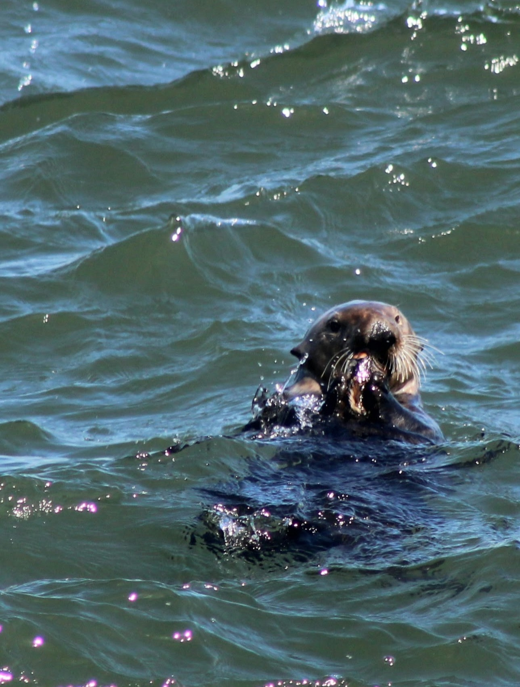

Ocean Acidification is a process in which the ocean becomes more acidic due to the intake of carbon dioxide (CO2) from the atmosphere. CO2 rises due to human activities like burning fossil fuel which the majority of this gas disolves in the waters. This lowers the pH in the ocean, disrupting the balance of the marine ecosystem. This affects many ocean's animals which also affect humans who rely on the oceans for sustenance.
Globally, ocean acidification is intensifying due to increased atmospheric CO2 absorption by the oceans, while seagrass ecosystems are experiencing significant decline. Seagrasses, such as eelgrass have proven to be critical in reducing localized decreases in pH over extended periods. Notably, even during nighttime hours when photosynthesis ceases, seagrass meadows can continue to exert a buffering effect on water chemistry, reducing acidity in their immediate surroundings. Scientific research has demonstrated that these ecosystems can elevate pH levels in the water column, thereby counteracting the impacts of ocean acidification. While there is concern that respiration may re-release carbon dioxide during dark periods, studies indicate that the net effect over time is a sustained buffering capacity. As a result, the preservation and restoration of seagrass habitats offer a promising natural healthy solution to help lower the progression of ocean acidification on a localized scale.
 Sea otters contribute to fight against ocean acidification indirectly through their role as maintaining healthy kelp forest. They feed on sea urchins, which are known to graze heavily on kelp. In areas where sea otter population is depleted, sea urchins have grazed kelp to incredibly low numbers. A healthy, intact kelp forest can absorb up to 20 times more carbon per acre than forests on land. By keeping sea urchins in check, sea otters help kelp forest thrive which in turn enhances the CO2 uptake and mitigates acidification. The presence of sea otters swimming freely returns the favor in many ways that positively affect the environment plus the significant role in helping alleviate an impending obstacle, climate change.